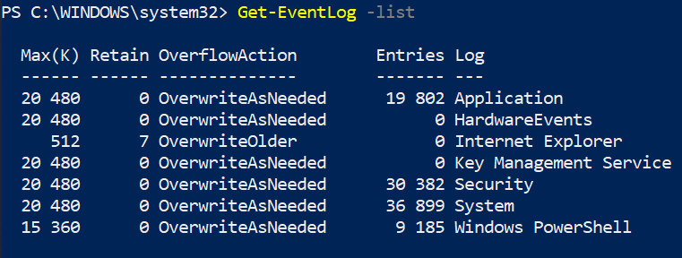

affiche l'observateur d'évènements
Exemples :
get-eventlog -list
# liste les types d'évènements à afficher

get-eventlog Application
# liste les évènements liés aux applications
get-eventlog Security
# liste les évènements liés aux sécurités